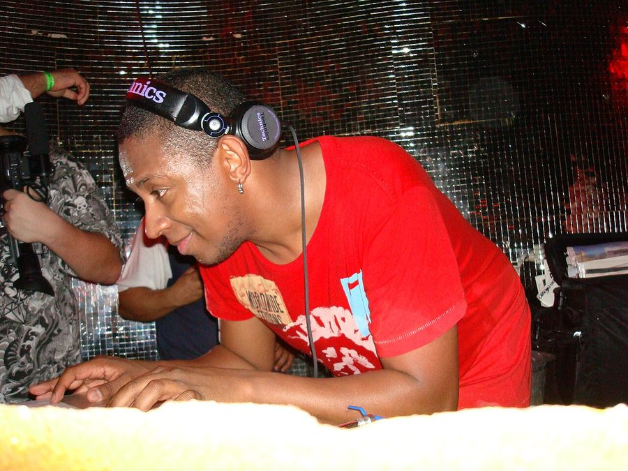

DNBBQ keeps it cooking with DJ Marky + Stamina MC



Following the recent news that Sydney’s Foreigndub crew will be launching their own record label as well as bringing back their flagship DNBBQ event in April, we’ve got new of yet another event that month! Taking place on the Saturday of the Anzac long weekend at Manning Bar, it’ll be featuring none other than the legendary DJ Marky with Stamina MC on the mic! Ably supported by a fine selection of Australian drum n’ bass talent, of course.
At 34 years of age, DJ Marky’s career began in the 80s, and by the beginning of the 90s he had already established himself as a winner in the international dance music scene, a pioneer of Brazilian dance music and eventually breaking through to the home of jungle and drum n’ bas sin the UK. Last year saw him release his new album DJ Marky & Friends: The Master Plan, whichn sparked a massive worldwide tour for the man. And now he’s coming back to Australia!
Tickets are $35 +BF, and as per usual the tasty BBQ concoctions of Foreigndub will be included in the ticket price! So catch DNBBQ with special guests DJ Marky + Stamina MC on Saturday 26th April at Manning Bar, Sydney Uni.